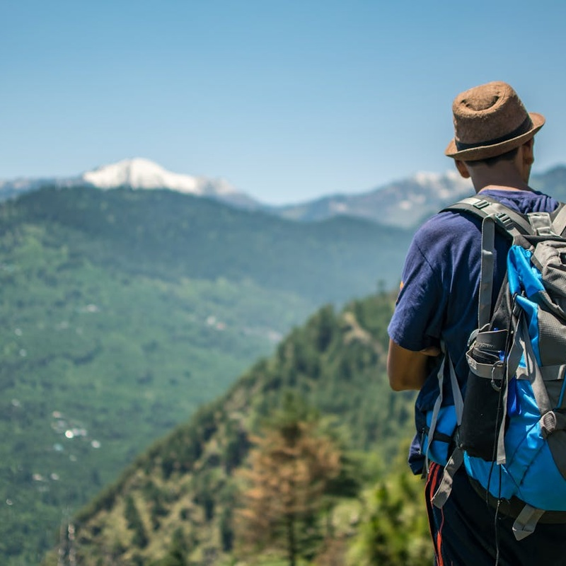

Your Camino de Santiago expert
Leave your number and we'll call you within 24h to advise you with no obligation.
Your number will only be used to call you. No spam.

240km of history and beauty from the vibrant city of Porto to the Cathedral of Santiago. Less crowded than the French Way, with medieval towns, Roman bridges and the charm of Portugal.
The Portuguese Way is the second most popular Camino route in the world and the one that has grown the most in recent years. From Porto, a UNESCO World Heritage city and home of port wine, the route heads north through a succession of historic towns, medieval bridges and landscapes combining authentic Portuguese culture with the natural beauty of the northwest Iberian Peninsula.
With just 240 kilometres and 12 stages, the Portuguese Way is perfect for those with two weeks' holiday who want the Camino experience without the physical demands of the French Way. The terrain is mostly flat or gently rolling, making it the ideal choice for first-time pilgrims, families or those returning to the Camino after a break.
Along the way you will cross the Luso-Spanish border over the international bridge between Valença and Tui, one of the most memorable moments of the route. Once in Galicia, stone paths, cruceiros and granite villages bring you closer to Santiago kilometre by kilometre. At Easy Camino Santiago we handle all the logistics so your only concern is to enjoy the walk.
12 stages from Porto to Santiago, taking in the best of Portugal and Galicia.
Departure from the magical city of the Douro. Day one starts at Porto Cathedral and crosses the River Douro into the heart of Portugal. The first kilometres are urban, but the Camino soon opens out into quiet villages and vineyards.
Capital of the Portuguese rooster. The stage arriving in Barcelos is one of the most iconic on the Portuguese Way. The medieval town, its famous weekly market and the Gothic bridge over the River Cávado make this a must-see stop.
Portugal's oldest town, set alongside the River Lima. Voted Best European Destination, Ponte de Lima is a treat for pilgrims. The Roman bridge, manor houses and Minho gastronomy make this one of the favourite stages on the route.
Crossing the Luso-Spanish border. One of the most special moments on the Camino: crossing the River Miño on the imposing iron bridge linking Valença and Tui, leaving Portugal behind and entering Galicia. The bastioned fortresses of both towns face each other across the river.
The final Galician stretch. From Redondela, with its railway viaduct, the Camino passes through Pontevedra — one of Galicia's most beautiful cities — and Padrón, birthplace of Rosalía de Castro and famous for its green peppers. The triumphal arrival in Santiago rounds off an emotion-filled journey.
All inclusive so you only have to think about walking. No surprises.
Private room in Portuguese and Galician guesthouses and rural tourism houses
Hotels and charming rural houses along the main stages
Prices per person in double room. Single supplement available. Check availability.
Hostels, guesthouses or hotels booked and confirmed night by night in Portugal and Galicia.
We collect your luggage every morning and take it to the next accommodation. You walk free.
Your Camino passport, to stamp at each stage and receive the Compostela in Santiago.
Complete stage-by-stage guide with maps, distances, elevation and points of interest in Portugal and Galicia.
Emergency line available 24 hours throughout the Camino. You will never be alone.
We guide you on how to collect your Compostela and Distancia at the Pilgrim Office in Santiago.
Practical guides to plan every detail before you go
The definitive list: technical clothing, footwear, first-aid kit and what you don't need.
Read more → ComparisonCompare the two most popular Camino routes and choose the one that suits you best.
Read more → PlanningMay, June and September account for 60% of pilgrims. Find out which month suits you best.
Read more →The Portuguese Way is waiting for you. Tell us your dates and we will prepare a personalised quote with no obligation.